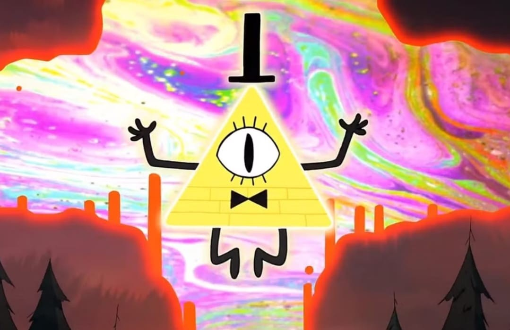
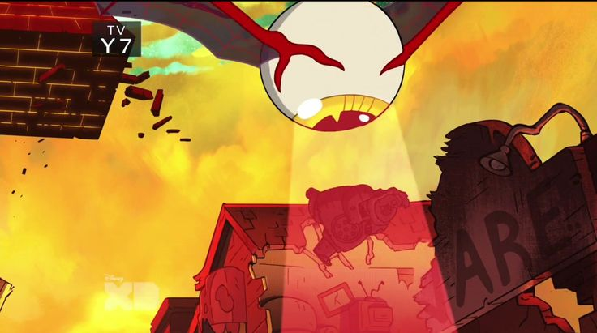
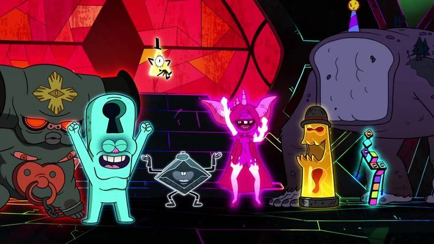
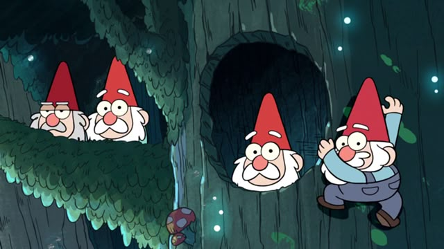
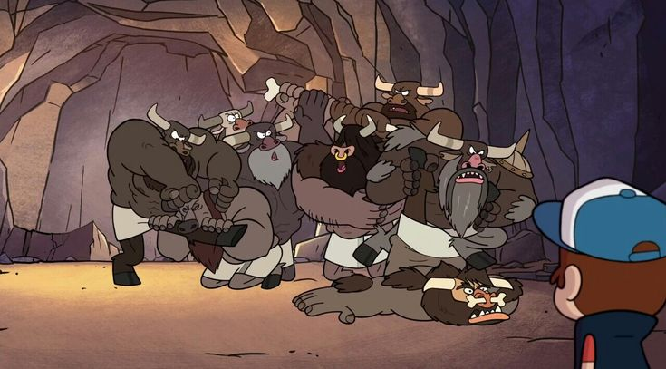
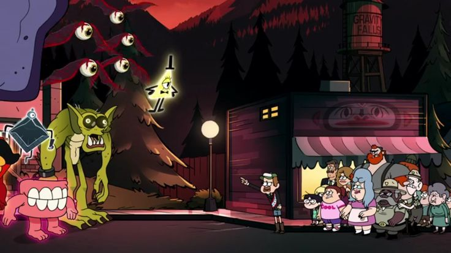

Bill Cipher
El principal responsable del desastre. Utiliza sus poderes para transformar la realidad y dominar Gravity Falls.
El fin de la realidad comienza aquí.
Cuando Bill Cipher rompe las reglas del universo, Gravity Falls se convierte en un mundo de caos, criaturas imposibles y pesadillas vivientes.
DESCUBRIR EL CAOS ↓El Raromagedón comienza cuando Bill Cipher se disfraza de Blendin Blandin para engañar a Mabel y convencerla de entregarle la mochila de Dipper, donde se encontraba la fisura interdimensional. Al tenerla en sus manos, Bill la azota contra el suelo y la rompe.
Esto abre un portal enorme en el cielo que le permite a Bill obtener una forma física tridimensional y desatar el caos. De inmediato, Bill atrapa a Mabel en una burbuja de locura, convierte al Tio Ford en una estatua de oro tras un intento fallido por detenerlo, y libera a sus monstruos secuaces para que comiencen a aterrorizar y pretificar a todos los habitantes del pueblo.
Bill Cipher es una entidad interdimensional con enormes poderes. Puede manipular la realidad, cambiar de forma, alterar objetos y convertir lugares normales en escenarios imposibles.
Su objetivo durante Raromagedón es imponer su propio mundo de caos y liberarse de las limitaciones que lo mantenían separado del mundo físico.
Bill disfruta del miedo y la confusión que provoca. Por eso convierte Gravity Falls en un lugar donde prácticamente cualquier cosa puede suceder.
Durante Raromagedón aparecen seres extraños, criaturas sobrenaturales y aliados de Bill. Estas son algunas de las entidades más destacadas.

El principal responsable del desastre. Utiliza sus poderes para transformar la realidad y dominar Gravity Falls.

Criaturas voladoras con enormes ojos que aparecen durante Raromagedón y contribuyen al ambiente aterrador.

Son los seguidores de Bill. Entre ellos hay seres extraños como 8-Ball, Teeth, Keyhole y Pyronica, cada uno con una apariencia y personalidad particular.

Son criaturas del bosque que aparecen en la serie. Aunque suelen comportarse de manera cómica, también pueden convertirse en una amenaza.

Son criaturas humanoides musculosas relacionadas con el mundo sobrenatural de Gravity Falls. Se caracterizan por su fuerza y su actitud agresiva.

Durante el caos, la realidad se vuelve impredecible y el pueblo queda rodeado de monstruos, formas imposibles y fenómenos sobrenaturales.
Bill consigue cruzar a la realidad física y comienza a utilizar sus poderes sin las mismas limitaciones de antes.
El entorno cambia de forma inexplicable. El cielo, los edificios y el paisaje comienzan a transformarse.
Bill y sus seguidores dominan el pueblo. Los habitantes deben esconderse, resistir y buscar una manera de escapar.
Dipper, Mabel, Ford, Stan y sus aliados buscan la manera de detener a Bill y recuperar el control de su mundo.
La batalla final enfrenta a Bill con la familia Pines. Stan y Ford desempeñan un papel fundamental en el plan para detenerlo, mientras los demás personajes intentan salvar Gravity Falls.
Finalmente, Bill es derrotado gracias a un plan que aprovecha sus propios errores. La realidad comienza a recuperar su estabilidad y el pueblo puede volver a la normalidad.
Raromagedón demuestra que incluso frente a una amenaza extraordinaria, la unión, la inteligencia y la confianza pueden marcar la diferencia.
VOLVER AL PRINCIPIO ↑